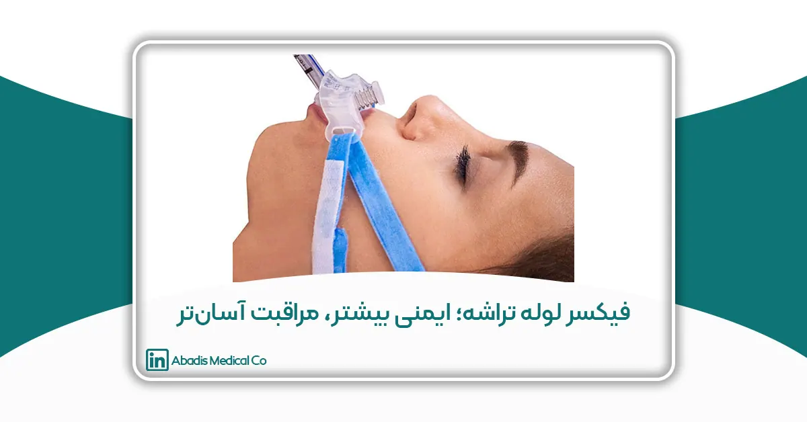

مقدمه
تأمین و حفظ راه هوایی ایمن، یکی از بنیادیترین اصول مراقبت از بیماران در بخشهای مراقبت ویژه، اتاق عمل و اورژانس به شمار میرود. لولهگذاری تراشه بهعنوان یک مداخله حیاتی، نقش کلیدی در پشتیبانی تنفسی بیماران بدحال، بیهوش یا دچار نارسایی تنفسی ایفا میکند. با وجود اهمیت این اقدام، چالشهای متعددی در تثبیت و نگهداشت صحیح لوله تراشه وجود دارد که در صورت مدیریت نامناسب میتواند منجر به عوارض بالینی قابل توجهی شود.
حرکت یا جابهجایی ناخواسته لوله تراشه، آسیب به مخاط دهان و لبها، ایجاد زخمهای فشاری، دشواری در انجام مراقبتهای بهداشتی دهان و افزایش خطر عفونتهای بیمارستانی از جمله مشکلات شایع در بیماران اینتوبهشده هستند. این چالشها بهویژه در بیمارانی با سطح هوشیاری پایین، بیقراری، دلیریوم یا همکاری محدود تشدید میشوند و فشار مضاعفی بر کادر درمان وارد میکنند. از این رو، استفاده از ابزارهای تخصصی برای تثبیت ایمن و پایدار لوله تراشه، به یک ضرورت بالینی تبدیل شده است.
فیکسر (نگهدارنده) لوله تراشه بهعنوان یک وسیله تخصصی تثبیتکننده، با هدف حفظ موقعیت صحیح لوله، کاهش آسیبهای بافتی و تسهیل مراقبتهای پرستاری طراحی شده است. این ابزار با ایجاد ثبات مکانیکی مناسب و فراهم کردن دسترسی بهتر به حفره دهان، میتواند نقش مؤثری در بهبود ایمنی بیمار، افزایش کیفیت مراقبت و ارتقای کنترل عفونت ایفا کند. توجه روزافزون به استانداردهای مراقبت بیمارمحور و پیشگیری از عوارض قابل اجتناب، جایگاه فیکسر لوله تراشه را بهعنوان بخشی مهم از مراقبتهای تنفسی مدرن بیش از پیش برجسته ساخته است.
چالشهای بیماران با همکاری پایین در تثبیت لوله تراشه
یکی از مهمترین چالشها در مراقبت از بیماران اینتوبهشده، تثبیت ایمن و پایدار لوله تراشه در بیمارانی است که سطح همکاری پایینی دارند. این گروه شامل بیماران با کاهش سطح هوشیاری، بیقراری، دلیریوم، آسیبهای مغزی، مصرف داروهای آرامبخش یا بیماران وابسته به تهویه مکانیکی طولانیمدت میشود. در چنین شرایطی، حفظ موقعیت صحیح لوله تراشه بدون استفاده از ابزارهای تخصصی، دشوار و پرخطر است.
در بیماران کمهمکار، حرکات ناگهانی سر و فک، تلاشهای غیرارادی برای خارج کردن لوله و مقاومت در برابر اقدامات درمانی، خطر جابهجایی، خمشدگی یا خروج ناخواسته لوله تراشه را بهطور قابل توجهی افزایش میدهد. این وضعیت میتواند پیامدهای جدی مانند اختلال ناگهانی در تهویه، افت اکسیژن خون، نیاز به اینتوباسیون مجدد و افزایش خطر آسیب راه هوایی را به دنبال داشته باشد. هر بار لولهگذاری مجدد، نهتنها برای بیمار استرسزا است، بلکه بار کاری و ریسک خطای بالینی را برای کادر درمان افزایش میدهد.
از سوی دیگر، روشهای سنتی تثبیت لوله تراشه، مانند استفاده از چسبهای معمولی یا باندهای غیراستاندارد، در بیماران کمهمکار اغلب ناکارآمد هستند. این روشها در برابر رطوبت، ترشحات دهانی و تعریق مقاومت کافی ندارند و بهراحتی شل میشوند. علاوه بر این، کشش نامتقارن ناشی از چسبها میتواند موجب فشار موضعی بیش از حد بر لبها و مخاط دهان شده و زمینهساز زخمهای فشاری، تحریک پوستی و آسیبهای بافت نرم گردد.
بیماران با همکاری پایین معمولاً نیازمند مداخلات مکرر برای تنظیم موقعیت لوله تراشه هستند. این دستکاریهای مداوم نهتنها موجب افزایش ناراحتی و استرس بیمار میشود، بلکه خطر آلودگی میکروبی و انتقال عفونت را نیز افزایش میدهد. همچنین، محدود شدن دسترسی به دهان بیمار در اثر روشهای تثبیت نامناسب، انجام مراقبتهای بهداشتی دهان و ساکشن ترشحات را دشوار کرده و خطر بروز عفونتهایی مانند پنومونی وابسته به ونتیلاتور را افزایش میدهد.
در این میان، استفاده از فیکسرهای استاندارد لوله تراشه میتواند راهکاری مؤثر برای غلبه بر این چالشها باشد. فیکسرها با ایجاد تثبیت پایدار و یکنواخت، کاهش نیاز به دستکاری مکرر و فراهم کردن دسترسی مناسب به دهان، ایمنی راه هوایی را حتی در بیماران با همکاری پایین حفظ میکنند. این امر نهتنها از بروز عوارض بالینی پیشگیری میکند، بلکه باعث کاهش فشار کاری کادر درمان و ارتقای کیفیت کلی مراقبت از بیمار میشود.
جلوگیری از زخمهای دهانی و آسیبهای بافتی
یکی از عوارض شایع و در عین حال قابل پیشگیری در بیماران اینتوبهشده، بروز زخمهای دهانی و آسیبهای بافت نرم ناحیه لب، گونه و مخاط دهان است. فشار مداوم لوله تراشه، تثبیت نامناسب و استفاده طولانیمدت از روشهای غیراستاندارد تثبیت میتواند منجر به اختلال در خونرسانی موضعی، نکروز بافتی و ایجاد زخمهای فشاری شود. این عوارض نهتنها موجب ناراحتی و درد بیمار میشوند، بلکه میتوانند زمینهساز عفونتهای ثانویه و افزایش مدت بستری نیز باشند.
در روشهای سنتی تثبیت لوله تراشه، استفاده از چسبها یا باندهای غیرطراحیشده برای این منظور، معمولاً باعث اعمال فشار نقطهای و نامتقارن بر نواحی حساس دهان میشود. این فشار مداوم، بهویژه در بیماران بیحرکت یا کمهمکار، به مرور زمان منجر به قرمزی، التهاب، زخمهای سطحی و در موارد شدیدتر، زخمهای عمیق مخاطی میگردد. همچنین تماس مستقیم چسب با پوست مرطوب و حساس دهان میتواند باعث تحریک پوستی، درماتیت تماسی و جداشدگی لایههای سطحی پوست شود.
بیماران اینتوبهشده معمولاً به دلیل کاهش بزاق، تنفس دهانی و مصرف برخی داروها، مستعد خشکی و آسیبپذیری بیشتر مخاط دهان هستند. در چنین شرایطی، هرگونه فشار یا اصطکاک اضافی ناشی از تثبیت نامناسب لوله تراشه، احتمال بروز آسیبهای بافتی را بهطور قابل توجهی افزایش میدهد. این آسیبها میتوانند روند بهبودی بیمار را مختل کرده و تجربه درمانی نامطلوبی ایجاد کنند.
استفاده از فیکسرهای استاندارد لوله تراشه نقش مهمی در پیشگیری از این مشکلات دارد. فیکسرها با طراحی ارگونومیک و استفاده از مواد سازگار با پوست، امکان توزیع یکنواخت فشار را فراهم میکنند و از ایجاد نقاط فشار متمرکز جلوگیری مینمایند. علاوه بر این، قابلیت تنظیم موقعیت لوله تراشه در فیکسرها باعث میشود که فشار وارده بر یک ناحیه ثابت نماند و احتمال آسیب بافتی کاهش یابد.
از سوی دیگر، فیکسر (نگهدارنده) لوله تراشه با ایجاد ثبات مناسب، نیاز به دستکاری مکرر لوله را کاهش میدهد. کاهش دفعات تنظیم و جابهجایی لوله، به معنای کاهش اصطکاک و تحریک مداوم مخاط دهان است که خود نقش مؤثری در حفظ سلامت بافتهای دهانی ایفا میکند. در مجموع، استفاده از فیکسر بهعنوان یک ابزار استاندارد تثبیت، میتواند بهطور مؤثری از بروز زخمهای دهانی پیشگیری کرده و کیفیت مراقبت از بیماران اینتوبهشده را ارتقا دهد.
افزایش رضایت بیماران و تجربه درمانی بهتر
رضایت بیمار یکی از شاخصهای مهم کیفیت مراقبتهای درمانی است و امروزه در کنار شاخصهای بالینی، بهعنوان معیاری اساسی در ارزیابی عملکرد مراکز درمانی مورد توجه قرار میگیرد. بیماران اینتوبهشده، بهویژه در بخشهای مراقبت ویژه، به دلیل محدودیت در ارتباط کلامی، احساس ناراحتی، اضطراب و کاهش کنترل بر وضعیت خود، در معرض تجربهای دشوار و پراسترس از فرآیند درمان قرار دارند. در چنین شرایطی، کاهش عوامل آزاردهنده و ایجاد حداکثر راحتی ممکن، نقش مهمی در بهبود تجربه درمانی بیمار ایفا میکند.
تثبیت نامناسب لوله تراشه میتواند موجب تحریک مداوم دهان و لبها، احساس فشار، درد و بیقراری شود؛ عواملی که حتی در بیماران با سطح هوشیاری کاهشیافته نیز اثرگذار هستند. این ناراحتیها اغلب منجر به افزایش حرکات غیرارادی، تلاش برای خارج کردن لوله و در نتیجه، تشدید چرخه بیقراری و مداخلات درمانی میشود. استفاده از فیکسر استاندارد لوله تراشه با ایجاد ثبات مناسب و کاهش تحریکات موضعی، به کاهش این تنشها کمک کرده و شرایط فیزیکی و روانی آرامتری برای بیمار فراهم میسازد.
از سوی دیگر، کاهش نیاز به دستکاری مکرر لوله تراشه، یکی از عوامل مهم در افزایش راحتی بیمار است. هر بار تنظیم یا تثبیت مجدد لوله میتواند باعث ناراحتی، درد یا افزایش اضطراب شود. فیکسر (نگهدارنده) لوله تراشه با حفظ موقعیت پایدار لوله، دفعات این مداخلات را کاهش داده و به ایجاد یک روند مراقبتی پایدار، قابل پیشبینی و کمتنش کمک میکند. این امر در بیماران بستری طولانیمدت، نقش مهمی در حفظ آرامش و تحملپذیری درمان دارد.
افزایش رضایت بیمار تنها به راحتی فیزیکی محدود نمیشود، بلکه به کیفیت کلی مراقبت نیز وابسته است. زمانی که تثبیت لوله تراشه بهدرستی انجام شود، امکان انجام بهتر مراقبتهای دهانی، ساکشن مؤثر و پیشگیری از عوارض فراهم میشود. این اقدامات، اگرچه ممکن است مستقیماً توسط بیمار احساس نشوند، اما بهطور غیرمستقیم موجب کاهش عوارض، کوتاهتر شدن دوره درمان و بهبود پیامدهای بالینی میگردند که همگی در نهایت به تجربه درمانی مثبتتر منجر میشوند.
در مجموع، فیکسر لوله تراشه با ایجاد تعادل میان ایمنی، راحتی و کیفیت مراقبت، نقش مؤثری در ارتقای رضایت بیماران ایفا میکند. توجه به چنین ابزارهایی نشاندهنده رویکردی بیمارمحور در مراقبتهای تنفسی است؛ رویکردی که هدف آن نهتنها حفظ حیات، بلکه بهبود تجربه انسانی بیمار در مسیر درمان است.
آسان شدن نظافت دهان توسط پرستاران و کادر درمان
نظافت و مراقبت از دهان یکی از اجزای اساسی مراقبت از بیماران اینتوبهشده است و نقش مهمی در پیشگیری از عفونتهای تنفسی، بهویژه پنومونی وابسته به ونتیلاتور، ایفا میکند. با این حال، در عمل بالینی، انجام منظم و مؤثر بهداشت دهان در بیماران دارای لوله تراشه همواره با چالشهایی همراه است. یکی از مهمترین این چالشها، محدودیت دسترسی به حفره دهان به دلیل تثبیت نامناسب لوله تراشه است که فرآیند مراقبت را برای پرستاران و کادر درمان دشوار میسازد.
در روشهای سنتی تثبیت لوله تراشه، استفاده از چسبها یا باندهای غیرتخصصی اغلب بخش قابل توجهی از اطراف دهان را پوشانده و مانع دسترسی کافی برای شستوشو، ساکشن ترشحات و بررسی وضعیت مخاط دهانی میشود. این محدودیت نهتنها زمان مورد نیاز برای انجام مراقبتهای دهانی را افزایش میدهد، بلکه احتمال انجام ناقص یا نامنظم این اقدامات را نیز بالا میبرد. در نتیجه، خطر تجمع ترشحات، رشد میکروارگانیسمها و بروز عوارض عفونی افزایش مییابد.
فیکسر (نگهدارنده) لوله تراشه با طراحی کاربردی و استاندارد، امکان دسترسی آزادتر و کنترلشده به دهان بیمار را فراهم میکند. این ویژگی به پرستاران اجازه میدهد تا بدون نیاز به باز کردن کامل تثبیت لوله یا ایجاد بیثباتی در موقعیت آن، اقدامات بهداشتی ضروری را انجام دهند. سهولت در دسترسی به دهان، فرآیندهایی مانند مسواکزدن، شستوشوی دهان، مرطوبسازی مخاط و ساکشن ترشحات را سریعتر، ایمنتر و مؤثرتر میسازد.
علاوه بر این، کاهش نیاز به دستکاری مکرر لوله تراشه در هنگام انجام مراقبتهای دهانی، موجب کاهش استرس بیمار و افزایش ایمنی بالینی میشود. پرستاران میتوانند با اطمینان بیشتری مراقبتهای روتین را انجام دهند، بدون آنکه نگران جابهجایی یا خروج ناخواسته لوله باشند. این امر نهتنها کیفیت مراقبت را افزایش میدهد، بلکه بار کاری و فشار روانی کادر درمان را نیز کاهش میدهد.
در مجموع، فیکسر (نگهدارنده) لوله تراشه با تسهیل نظافت دهان و بهبود دسترسی به حفره دهانی، نقش مهمی در ارتقای کیفیت مراقبتهای پرستاری ایفا میکند. این ابزار با سادهسازی فرآیندهای مراقبتی، به کادر درمان کمک میکند تا با صرف زمان و انرژی کمتر، مراقبتی ایمنتر، مؤثرتر و مطابق با استانداردهای کنترل عفونت ارائه دهند.
افزایش پاکیزگی و نقش در کنترل عفونت
کنترل عفونت در بیماران بستری، بهویژه در بخشهای مراقبت ویژه و بیمارانی که نیازمند تهویه مکانیکی هستند، یکی از اولویتهای حیاتی مراقبت بالینی است. دهان و راه هوایی فوقانی بهعنوان یکی از مهمترین منابع بالقوه میکروارگانیسمها، در صورت عدم رعایت بهداشت مناسب، میتواند زمینهساز پنومونی وابسته به ونتیلاتور (VAP) و سایر عفونتهای تنفسی شود. تثبیت نامناسب لوله تراشه و دشواری در دسترسی به دهان، افزایش تجمع ترشحات و رشد میکروبی را تسهیل میکند و کنترل عفونت را با چالش مواجه میسازد.
فیکسر لوله تراشه با طراحی ارگونومیک و امکان ثبات مطمئن لوله بدون ایجاد مانع برای دسترسی به دهان، به بهبود پاکیزگی کمک میکند. این ابزار اجازه میدهد تا پرستاران و کادر درمان بتوانند بهطور مؤثر ترشحات دهان را ساکشن کنند، دهان را شستوشو دهند و اقدامات بهداشتی را منظم و دقیق انجام دهند. کاهش دستکاریهای مکرر لوله تراشه نیز موجب میشود که احتمال آلودگی و انتقال میکروارگانیسمها کاهش یابد.
استفاده از فیکسر استاندارد همچنین امکان کنترل بهتر ترشحات و جلوگیری از تماس تصادفی ابزار یا دستها با نواحی آلوده را فراهم میکند. این موضوع نه تنها به کاهش خطر انتقال عفونت بین بیماران کمک میکند، بلکه حفاظت از کادر درمان را نیز افزایش میدهد. به عبارتی، تثبیت صحیح و پایدار لوله تراشه با فیکسر، بخشی از استراتژی کلی کنترل عفونت در بخشهای ICU و اتاق عمل بهشمار میآید.
در نتیجه، استفاده از فیکسر (نگهدارنده) لوله تراشه به حفظ پاکیزگی محیط دهان، کاهش بار میکروبی و پیشگیری از عفونتهای بیمارستانی کمک میکند و همزمان امکان ارائه مراقبت ایمن و مؤثر توسط پرستاران و کادر درمان را فراهم میآورد. این ویژگی، فیکسر را به ابزاری حیاتی در مراقبتهای تنفسی مدرن و استاندارد تبدیل کرده است.
جمعبندی و رویکرد آبادیس در توسعه راهکارهای مراقبتی
تثبیت صحیح لوله تراشه یکی از مهمترین اجزای مراقبت از بیماران اینتوبهشده است که مستقیماً با ایمنی بیمار، کیفیت مراقبت و رضایت کادر درمان ارتباط دارد. مشکلات بیماران با همکاری پایین، خطر بروز زخمهای دهانی، دشواری در نظافت دهان و افزایش خطر عفونت از جمله چالشهای کلیدی در این حوزه هستند. استفاده از فیکسر (نگهدارنده) لوله تراشه با طراحی استاندارد و ارگونومیک، توانسته است این چالشها را کاهش دهد و مزایایی قابل توجه برای بیماران و کادر درمان فراهم کند.
مزایای استفاده از فیکسر شامل:
-
افزایش ایمنی و ثبات لوله تراشه حتی در بیماران کمهمکار
-
جلوگیری از زخمهای دهانی و آسیبهای بافتی
-
افزایش راحتی و رضایت بیماران و بهبود تجربه درمانی
-
تسهیل مراقبتهای بهداشتی دهان توسط پرستاران
-
بهبود پاکیزگی و کنترل عفونت در محیط بالینی
این مزایا نه تنها سلامت و رفاه بیمار را ارتقا میدهند، بلکه بار کاری کادر درمان را کاهش میدهند و امکان ارائه مراقبتهای دقیق، ایمن و استاندارد را فراهم میکنند.
آبادیس همواره با تمرکز بر توسعه راهکارهای نوآورانه، استاندارد و کاربردی در حوزه تجهیزات پزشکی، به دنبال ارائه ابزارهایی است که هم برای بیمار و هم برای کادر درمان رضایتبخش باشند. رویکرد آبادیس بر پایه نیازهای واقعی بالینی، کاهش عوارض جانبی، تسهیل فرآیندهای مراقبتی و ارتقای کیفیت کلی مراقبت استوار است. از این رو، فیکسر (نگهدارنده) لوله تراشه به عنوان نمونهای از راهکارهای بیمارمحور، نشاندهنده تعهد آبادیس به بهبود تجربه درمانی، افزایش ایمنی و تسهیل کار پرستاران و پزشکان میباشد.
در نهایت، استفاده از ابزارهای تخصصی مانند فیکسر (نگهدارنده) لوله تراشه، نه تنها بخشی از مراقبت استاندارد بالینی است، بلکه گامی مهم در جهت پیادهسازی رویکردهای مدرن، ایمن و انسانی در مراقبتهای تنفسی بهشمار میرود و نمونهای موفق از ترکیب فناوری و مراقبت بیمارمحور است.
منابع
-
Gupta, S., & Kapoor, A. (2018). Endotracheal Tube Securing Devices: A Review of Techniques and Complications. Journal of Anaesthesiology Clinical Pharmacology, 34(3), 321–328.
-
بررسی روشهای تثبیت لوله تراشه و عوارض ناشی از روشهای غیر استاندارد.
-
-
Gravenstein, N., & Henthorn, T. K. (2017). Airway Management in the Intensive Care Unit. Critical Care Clinics, 33(2), 237–255.
-
اهمیت تثبیت ایمن لوله تراشه در بیماران ICU و کنترل عفونت.
-
-
Kollef, M. H., et al. (2005). Prevention of Ventilator-Associated Pneumonia in the Intensive Care Unit. Critical Care Medicine, 33(3), 525–534.
-
نقش بهداشت دهان و دسترسی آسان در کاهش پنومونی وابسته به ونتیلاتور.
-
-
American Association of Critical-Care Nurses (AACN). (2016). Practice Alert: Oral Care for Patients Receiving Mechanical Ventilation.
-
راهنمای مراقبت دهانی و استفاده از تجهیزات تثبیت استاندارد برای پیشگیری از عفونت.
-
-
Bailey, B., & McGrath, B. (2014). Patient Comfort and Safety with Endotracheal Tube Securing Devices. British Journal of Nursing, 23(12), 672–679.
-
تأثیر فیکسرهای لوله تراشه بر راحتی و رضایت بیماران.
-
-
Hospitals for a Healthy Environment (H2E). (2019). Reducing ICU Infections Through Effective Airway Management.
-
راهکارهای کنترل عفونت و پاکیزگی در بیماران اینتوبهشده.
-
-
Cook, T. M., et al. (2011). Major Complications of Airway Management in the Intensive Care Unit: Epidemiology and Prevention. British Journal of Anaesthesia, 106(6), 746–754.
-
بررسی عوارض ناشی از تثبیت نادرست لوله تراشه و اهمیت ابزارهای استاندارد.
-
-
Fischer, R., & Wenzel, V. (2019). Endotracheal Tube Fixation in Critically Ill Patients: Clinical Considerations and Device Evaluation. Intensive Care Medicine, 45(11), 1525–1535.